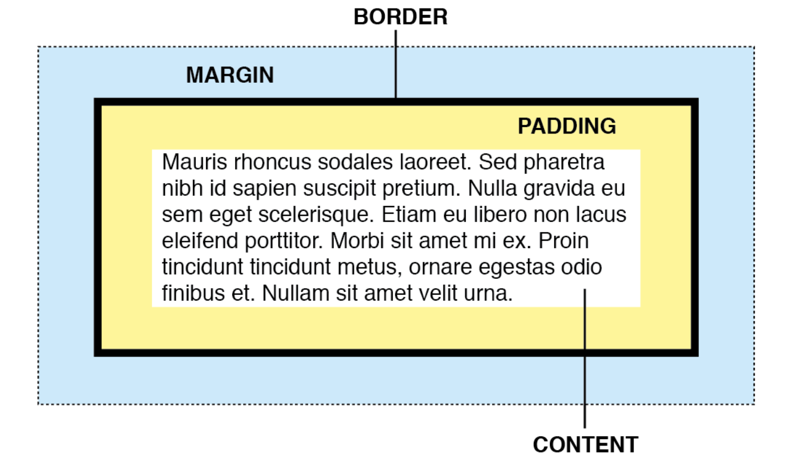
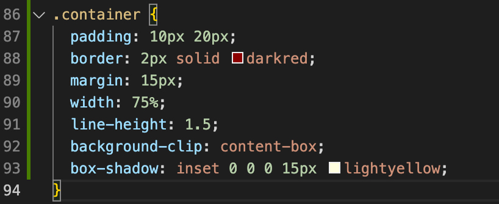

All three are spaces wrap around the content of an html element in the CSS box model. Margin is the outer most empty space taken up by an element on a screen (In each containers, the space outside of the border). Border is the line of border around an element (In each containers, the darkred line). Padding is the empty space with background around the content of an element (The lightyellow area).  
As explained on YouTube by Kevin PowellThis is to do with the display property in CSS. HTML elements have a default display value dependant on if the elements are inline or block level elements. Using CSS display property, inline elements could be presented as block elements with inline-blocks. This gives the ability to adjust the width and height of inline elements. Also the padding and border without affecting the neighbouring elements.